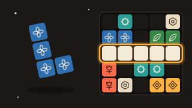
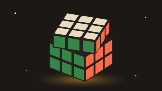

Sayı Bulmaca
Uzun bas ya da İşaretle'yi aç: rakam sırayla yok, var, yeri belli olarak işaretlenir.
Nasıl oynanır?
Gizli sayının rakamları birbirinden farklıdır ve ilk hanesi sıfır değildir (serbest modda bunu ayarlardan değiştirebilirsin). Her tahminden sonra iki ipucu alırsın: + sayısı doğru rakamı doğru yerde bildiğin hane sayısıdır, − sayısı ise sayıda olan ama başka yerde duran rakamların sayısıdır. Örneğin gizli sayı 7309 iken 3709 tahmini +2 −2 alır. Rakam tuşlarını uzun basarak ya da İşaretle modunu açarak elediğin rakamları not edebilirsin. Deneme hakkın sınırsız; amaç sayıyı en az denemede bulmak. Günlük bulmacada bugün herkes aynı 4 haneli sayıyı çözer, serbest modda 3, 4 ya da 5 haneli rastgele sayılarla istediğin kadar oynarsın. İstatistiklerin yalnızca bu cihazda, her zorluk için ayrı saklanır.
Benzer oyunlar
-

BulmacaÇini Blok
İznik motifli blok parçalarını 8×8 tahtaya sürükle, satır ve sütun doldurup kombo yap. Günlük meydan okuma ve sonsuz klasik mod.
-
 Bulmaca
BulmacaSudoku
Kalem notlu, 4 seviyeli Sudoku: Türkçe adım adım ipucu, her gün herkese aynı günlük bulmaca ve seri. Her bulmaca tek çözümlü.
-

BulmacaZekâ Küpü
Parmağınla döndürülen 3D zekâ küpü. 2×2, 3×3 ve 4×4 boyutları, günlük karıştırma, kronometre ve adım adım Türkçe çözüm rehberi.